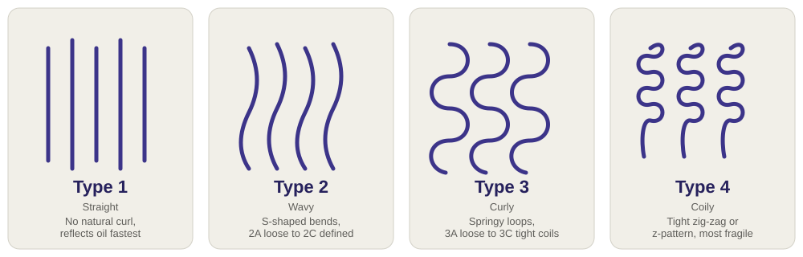

How this works, honestly: the score comes from a transparent, published rule list
(see "how scoring works" below) applied to a product's real ingredient list from
Open Beauty Facts,
a free, open, crowdsourced database — not a proprietary lab test, and not a medical opinion.
Camera scanning uses your browser's real barcode reader (no camera library download, no
account, nothing leaves your device except the barcode number sent to look up the product).
How scoring works (the full transparent list)
Hair type
The standard 1–4 typing system used across the haircare industry. This changes what "highly rated" means for you on the Recommendations tab.

Hair color
Color-treated hair reacts differently to sulfates and alcohols — this tunes recommendations too.
Hair conditions
Select anything that applies — this can help tailor what counts as a stronger or weaker concern for you.
Real products from Open Beauty Facts, scored with the same transparent rules as the scanner,
sorted best-to-worst. "Highly rated" here means "scored well against our published ingredient
checklist" — not an independent lab test or a paid placement.